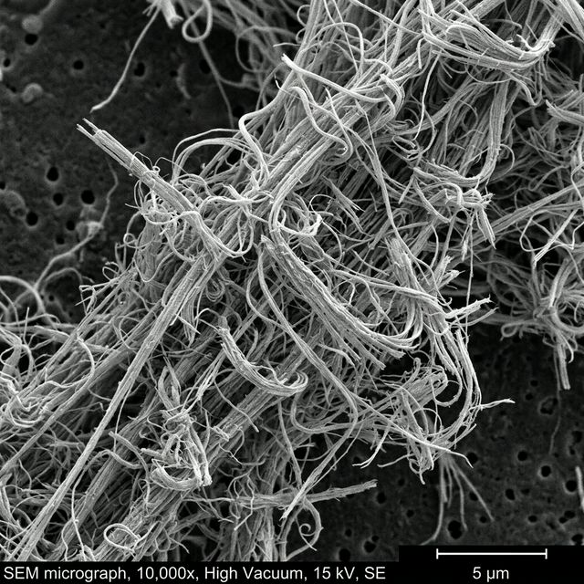
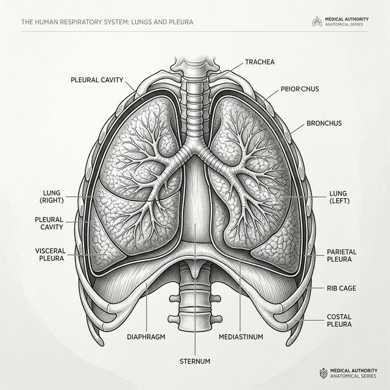

What Is Mesothelioma?
A neutral overview of mesothelioma, where it develops, how it is classified, and why asbestos exposure remains the central risk factor in most cases.
Mesothelioma is a rare cancer that develops in the mesothelium, the thin tissue that lines many internal organs. In the United States, 2,669 new mesothelioma cases were reported in 2022, according to federal cancer statistics. Exposure to asbestos causes most cases. CDC

The most common site is the pleura, the lining around the lungs. Federal incidence data show pleural disease accounts for the majority of cases, while peritoneal mesothelioma, which affects the abdominal lining, is less common but still significant. CDC
Where mesothelioma develops

Mesothelioma is named by location. Pleural mesothelioma affects tissue around the lungs. Peritoneal mesothelioma affects the lining of the abdomen. Less common forms can affect the lining around the heart or the lining around the testicles. CDC
Why asbestos matters
Asbestos fibers were used extensively in insulation, construction products, industrial materials, vehicle parts, and other products during the twentieth century. When disturbed, asbestos-containing materials can release tiny fibers that may be inhaled or swallowed. Over time, those fibers can contribute to inflammation and later disease. NCI
Long latency is part of the story
Mesothelioma often appears long after exposure. Major health sources describe a latency period commonly measured in 20 to 50 years. That long delay helps explain why cases can still appear decades after asbestos use declined in many settings. American Cancer Society
Symptoms and diagnosis
Symptoms vary by location and are not unique to mesothelioma. National Cancer Institute materials note that signs may include shortness of breath, cough, chest pain, abdominal pain or swelling, fatigue, and unexplained weight loss, depending on where disease is present. Diagnosis usually requires imaging and tissue testing. NCI